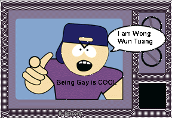

h0h00h0h0h..looks like we hit ya Once AGAIN. hAR hAR hAR. Yes, I am mocking you Wong Wun Tuang AGAIN. As the dice rolls, so do we. This time we hit double sixes and this pulled us through to your site AGAIN. Mr Wong Wun Tuang, I am sorry to inform you that once again, [unholy] has owned you. Why? Cuase your an idiot. Well, looks like [unholy] hit two sites today and yes they are both related to you. Looks like Your enemies are big. eh....
http://www.b-r-o-o-d.com

[unholy] Forever Again! 1999
"Live Like Kings, And Get Rewards like Kings"
http://www.u-n-h-o-l-y.com
-
Tattooist is pirch@liv2-31.oshawa.idirect.com * http://www.geocities.com/soho/exhibit/9959/
Tattooist on +#hangtime @#EZCHAT #toronto
Tattooist using Vancouver.BC.CA.Undernet.Org [199.60.228.129] Internet
Direct, Western Canada
tattooist End of /WHOIS list.
-
By the way, Mr Tattoo Man, fags like you should DIE.
[unholy] 1999
eMail